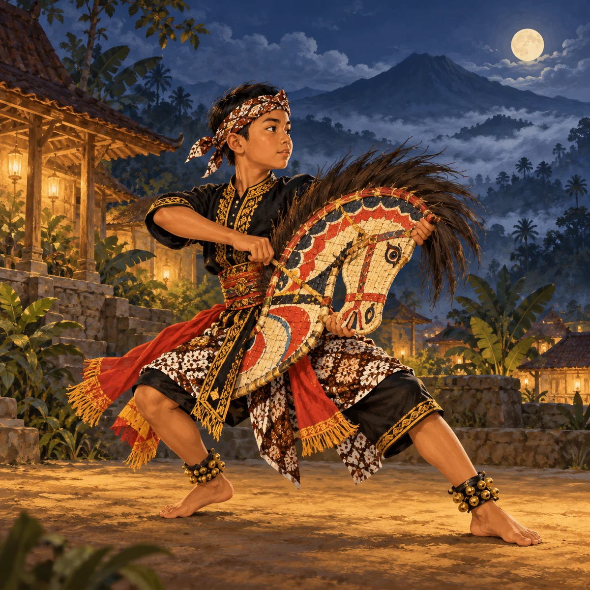

Cari Objek Temanggung · Periksa Unggahan
 1
/
1
/
 0
0
 Keluar
Keluar

Petunjuk 2 dari 4
Kesempatan
Bacalah papan informasi. Ketuk bagian unggahan yang isinya tidak sesuai dengan papan itu.
@jalan2_bima

Foto: Sanggar Kuda Pelangi
Tari kuda lumping di lapangan desa! Kuda-kudaannya dari kayu jati 😍
Kirim pesan ke sanggar
Bagikan
NadiaKeren! Terima kasih sudah berbagi foto kesenian Temanggung 👏
DoniTarian kuno, nggak zaman! 😝
PAPAN INFORMASI PAMERANKuda lumping memakai kuda-kudaan dari anyaman bambu yang dicat warna-warni.
Yang harus ditemukan
- Petunjuk 1
- Petunjuk 2
- Petunjuk 3
- Petunjuk 4